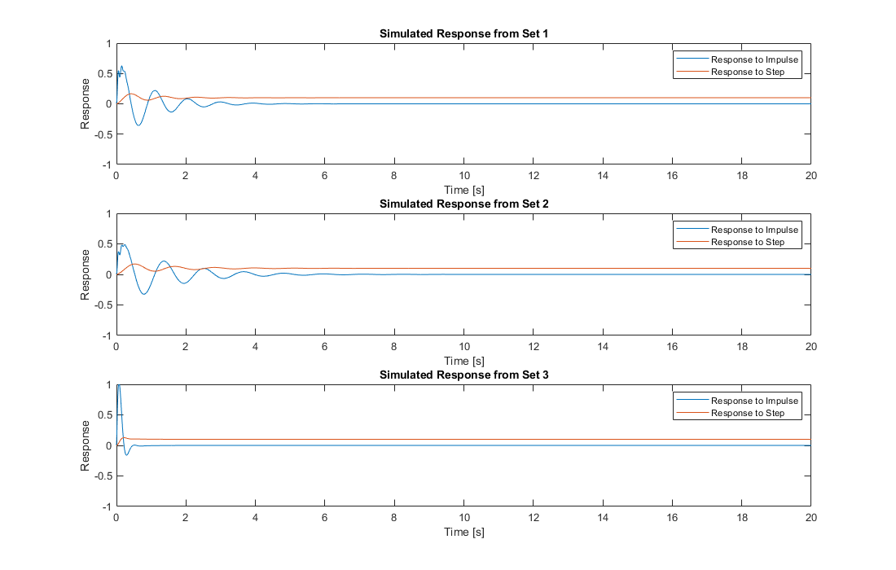

Homework 2 - Problem 4
2/26/21 Michael White
close all; clear; clc; % Define variables in vectors with index corresponding to set # Mw = [50,50,50]; Mb = [400,600,600]; Kw = [200000,200000,200000]; Ks = [20000,20000,20000]; Bs = [1000,1000,10000]; % Generate figure for plotting, adjusting size for publishing x = figure('Position',[300 200 1100 700]); for i = 1:length(Mw) % Define the transfer function s = tf('s'); sys = ((Ks(i)+Bs(i)*s)*Kw(i))/((Mb(i)*s^2+Ks(i)+Bs(i)*s)*(Mw(i)*s^2+Ks(i)+Bs(i)*s+Kw(i))-(Ks(i)+Bs(i)*s)^2); % Define the time t = [0:0.01:20]; % Define the system's response to impulse and step w/ magnitudes of 0.1 y1 = 0.1*impulse(sys, t); y2 = 0.1*step(sys, t); % Defining subplot and plotting results over one another at sp location subplot(3,1,i); plot(t, y1); hold on; plot(t, y2); % Generate common y-axis sizes for comparability ylim([-1,1]); % Generate labels on the graph for axes, title, and legend xlabel('Time [s]'); ylabel('Response'); title (strcat("Simulated Response from Set ",num2str(i))); legend('Response to Impulse', 'Response to Step'); end % PART C COMMENTS: % Going from set 1 to 2, the variable changed is Mb, the mass of the car % body. Increasing this value will cause more oscillation in the system, % due to the system having to dampen a larger object with more energy. This % is seen when comparing the graphs between 1 and 2. % Going from set 2 to 3, the factor changed is Bs, the dampening % coefficient of the damper. This value is increased 10x, which directly % increases the dampening force exuded by the damper. By increasing this, % the system oscillates much less than the previous systems, as seen in the % graph for set 3.